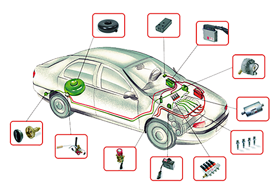
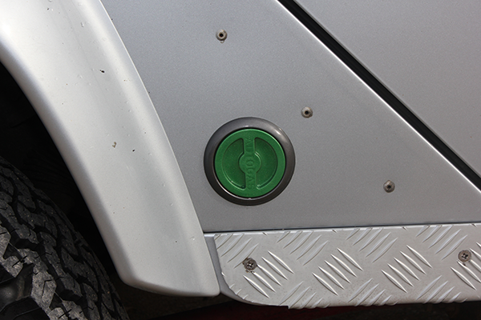
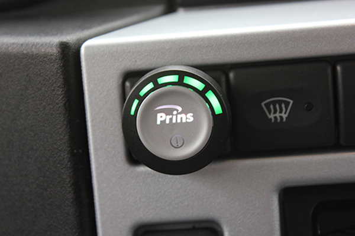
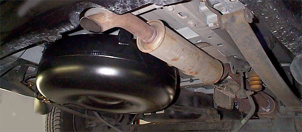

Eco-friendly Fuel Conversions
An LPG Conversion as supplied by CVG is a high quality well engineered piece of technology. All systems comply with EU standards and in many cases we use exactly the same components used by car manufacturers as original equipment. The following is a non-technical guide to what you need to know.

An LPG conversion is simply a secondary fuel system for your car that enables it to run on Liquefied Petroleum Gas (LPG). The primary fuel system (normally petrol) is always retained. This means that the vehicle becomes dual or bi fuel so that you can run your car on either Petrol or LPG at the touch of a button.
This System can also be supplied in CNG form (Compressed Natural Gas) where by the vehicle can run on Natural Gas or even Biomethane when it becomes more available as a Green Gas from the grid. Home Gas dispensers have been developed with a small slow fill compressor that can operate at any home, office or factory around the world and is ideal for car or light van users.
What could be easier – convenience of re-fuelling at home or at work plus: - Significantly lower fuel costs (up to 60%) - No need to visit a retail fuel station - Ability to shop around for a fuel supplier - Less volatile fuel price - Credit on fuel supplies - Low emission fuel - CO2 saving technology (up to 90%)
UNDER BOONNET A second set of fuel injectors are fitted, these deliver the LPG to the engine in the same way as normal petrol injectors. A four cylinder engine will normally require four injectors, a six cylinder six injectors and so on. The injectors are fed with gas from a special pressure reducer and all this is controlled by an additional ECU (Engine Control Unit) linked to the vehicle’s own engine management system. This means that the vehicle still uses all its existing sensors for monitoring the engine requirements and adjusting the fuel delivery to give maximum performance, efficiency, economy plus lower emissions. LPG can be sourced at over 1,400 filling stations UK wide and can save up to 22% emissions.

LPG FILLER POINT In order to re-fuel the LPG tank a filler point is added to the outside of the vehicle. This can take the form of a colour coded flush mounted cover approximately 75mm in diameter that can be opened to reveal the filler connector. The mounting position can be almost anywhere towards the rear of the car. If body mounting is not desirable then tow bar or chassis mounting brackets are possible. The LPG tank is the largest component in an LPG/Autogas conversion. Most tanks simply fit in the spare wheel compartment, (even if the spare wheel is under the car). All tanks are made in Europe, they are required to conform to strict EU standards and are made of high quality steel. There is no Legal requirement to carry a spare wheel. Please note LPG tanks are always quoted in water capacity and only fill to 80% of that capacity for safety reasons.
ON THE DASHBOARD The vehicle will automatically switch to LPG when the engine temperature of around 40 degrees is achieved, this normally takes just a couple of minutes. For manual override a small switch & status unit is added to the dashboard. The Prins central logo indicates the fuel you are using (red for petrol, green for LPG) and the lights around the top-side indicate the fuel level status. Pressing the centre of the button switches between fuels.

LPG TANK An LPG conversion is simply a secondary fuel system for your car that enables it to run on Liquefied Petroleum Gas (LPG). The primary fuel system (normally petrol) is always retained. This means that the vehicle becomes dual or bi fuel so that you can run your car on either Petrol or LPG at the touch of a button.
LPG can be sourced at over 1,400 Forecourts across the UK at around £0.69 ppl and can see savings of up to 22% on emissions, we can provide systems for direct Injection engines where the vehicle can start on LPG but has the benefit of being dual-fuel. http://www.getlpg.org.uk/ For commercial/ fleet usage we can supply on-site bunkered LPG at £0.49 ppl +Vat and also manage the refuelling Infrastructure required. More Information on fleet usage is available upon request...

WHAT COULD BE EASIER – THE CONVENIENCE OF RUNNING DIESEL/ GAS:
- SIGNIFICANTLY LOWER FUEL COSTS (UP TO 30%) - QUIETER, SMOOTHER AND CLEANER ENGINE - LESS VOLATILE FUEL PRICE WITH GAS PRICES FIXED UNTIL 2024 - EMISSION SAVING TECHNOLOGY (UP TO 60%) - SYSTEM ALSO REDUCES PARTICULATE MATTER AND NOX'S - VIRTUALLY ALL BLACK SMOKE ELIMINATED